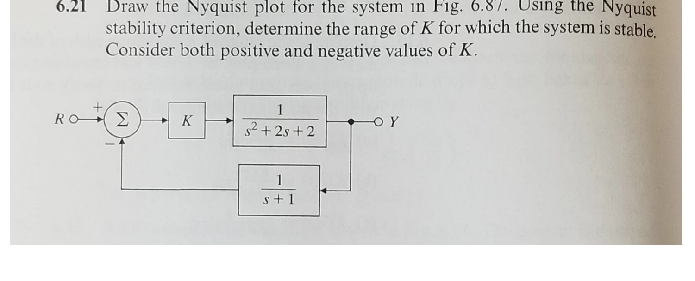
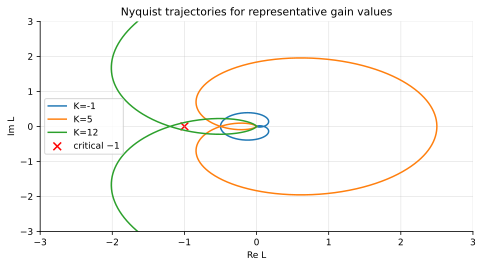
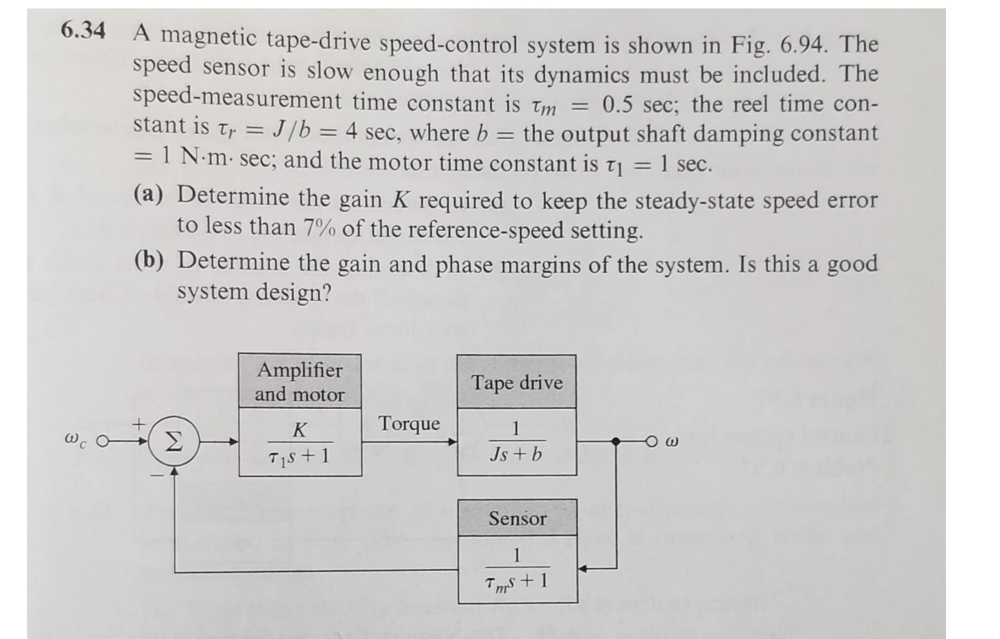
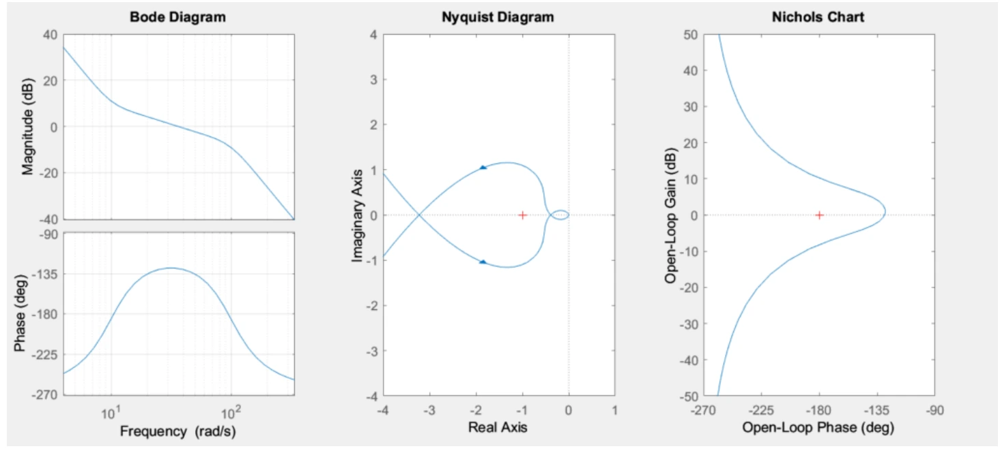

Source: AE511_HW6.pdf (2 pages). Unlike assignments that only cite a textbook, this PDF includes photographs of the full statements and diagrams for Problems 1–2; they have been interpreted and solved here without reproducing the photographs.
Problem 1 — Feedback system with positive or negative gain
Problems 6.21 of the 8th edition of the US textbook.
6.21 Draw the Nyquist plot for the system in Fig. 6.87. Using the Nyquist stability criterion, determine the range of \(K\) for which the system is stable. Consider both positive and negative values of \(K\).

Write the loop including the nonunity sensor and derive its characteristic polynomial. Check positive and negative gain intervals.
Worked solution and reasoning
The block diagram has forward \(K/(s^2+2s+2)\) and feedback sensor \(H=1/(s+1)\), with a negative summing junction. Thus
Open-loop poles are \(-1\) and \(-1\pm j\), so the Nyquist criterion begins with \(P=0\) open-loop right-half-plane poles. The closed-loop characteristic polynomial is
Use a cubic Routh table: the first column is \([1,\,3,\,(3\cdot4-(2+K))/3,\,2+K]\). All entries must be positive:
At \(K=-2\) a closed-loop pole reaches \(s=0\) (marginal). At \(K=10\) the Routh middle condition vanishes; the polynomial factors \((s+3)(s^2+4)\), so poles are \(\pm2j\) (marginal). Outside the interval the closed loop is unstable. This analytic result is the exact gain range that a correctly interpreted Nyquist plot must reproduce, including negative \(K\).

Self-check: Were gain sign and nonunity feedback both preserved?
Problem 2 — Magnetic-tape-drive speed controller
Problems 6.34 of the 8th edition of the US textbook.
6.34 A magnetic tape-drive speed-control system is shown in Fig. 6.94. The speed sensor is slow enough that its dynamics must be included. The speed-measurement time constant is \(\tau_m=0.5\ \mathrm{sec}\); the reel time constant is \(\tau_r=J/b=4\ \mathrm{sec}\), where \(b\) = the output shaft damping constant = 1 N·m·sec; and the motor time constant is \(\tau_1=1\ \mathrm{sec}\).
- Determine the gain \(K\) required to keep the steady-state speed error to less than 7% of the reference-speed setting.
- Determine the gain and phase margins of the system. Is this a good system design?

For the tape drive, include BOTH the actuator and sensor lags; calculate DC tracking error before checking margins.
Worked solution — answered by question part
Part (a) — Solve the steady-state speed-error requirement
The printed model gives motor time constant \(\tau_1=1\) s, sensor time constant \(\tau_m=0.5\) s, and mechanical time constant \(J/b=4\) s with \(b=1\) N·m·s (hence \(J=4\)). The forward plant is
For a unit step command, the measured speed is \(Hy\) and \(H(0)=1\). The steady-state fractional speed error is \(e_\infty=1/(1+K)\). To obtain less than 7%,
Part (b) — Calculate gain and phase margins and assess the design
For \(K\approx13.286\), solve \(|L(j\omega)|=1\) using
The gain crossover is \(\omega_c\approx1.477\) rad/s. Its phase is
so the phase margin is only about \(7.3^\circ\). At phase crossover \(\omega_\pi\approx1.658\) rad/s, the gain margin is about \(1.27\) in linear units or \(2.1\) dB. These are extremely small margins: the controller meets the DC tracking condition but is not a robust design. Choosing a larger \(K\) for smaller error makes stability worse, not better.
Self-check: Were units and sensor pole both included?
Problem 3 — Read margins from Bode, Nyquist, and Nichols
For the figure below, perform the following steps:
- Estimate the stability margins from each plot individually.
- Draw the stability margins on each plot.

Note: You should ignore the negative frequencies when calculating the stability margins using the Nyquist plot.
Read gain and phase margins separately from each representation, and pay attention to negative or repeated crossings.
Worked solution — answered by question part
Part (1) — Estimate gain and phase margins on each plot
The supplied page has three views of the same nontrivial loop, with phase that reverses direction and may cross \(-180^\circ\) more than once. For Bode, find each frequency at which magnitude crosses 0 dB and read its phase: \(PM=180^\circ+\angle L(j\omega_c)\), with phase consistently unwrapped. Then find every frequency at phase \(-180^\circ\) and calculate \(GM_{\rm dB}=-20\log_{10}|L(j\omega_\pi)|\). A positive \(PM\) at one crossover does not guarantee stability when there are multiple crossings or open-loop unstable poles.
For Nyquist, read the distance/angle to \((-1,0)\) on the positive-frequency branch, as the source instructs; for Nichols, measure the crossing at phase \(-180^\circ\) and the phase distances at 0 dB. From the uploaded figure, a reasonable graphical estimate is gain crossover around \(30\)–\(40\) rad/s and a positive phase margin of approximately \(45\)–\(50^\circ\). There are two phase-\(-180^\circ\) crossings: one has loop gain above 0 dB (about \(+10\) to \(+15\) dB), and the other is below 0 dB (about \(-10\) to \(-15\) dB). This suggests approximate allowable gain decrease and increase margins on the order of 10–15 dB, respectively, if the complete Nyquist winding verifies the current operating point is stable. They are estimates, not accurate numbers derivable from the small print; check the underlying numerical data or MATLAB's allmargin for exact results.
Part (2) — Draw and label the margins on the three plots
Bode: mark the 0-dB gain crossings and the ±180° phase-crossing level; read the vertical gain-margin gap and the phase-margin gap. Nyquist: indicate the unit-radius crossing and the vector separation from −1. Nichols: draw the critical point at (−180°, 0 dB) and measure horizontal/vertical separations at the respective crossings. Inspect each crossover independently; the original image is printed above this solution.
Additional reasoning, cautions, and checks
The recreated sketch is an approximate teaching annotation, not a numerical digitization of the printed curves. The three plots encode the same gain and phase information, and multiple crossings must not be collapsed into a single margin.
Self-check: Does the Nyquist crossing agree with the Bode phase margin?
Problem 4 — Is a 25-ms delay important for a 1-s rise time?
Using the rules of thumb presented in class, is a 25 ms delay a cause for concern for a system with an expected rise time of 1 second? We will call a change in phase margin greater than 5 degrees a cause for concern.
Express delay as exp(-sτ), convert phase loss to degrees at crossover, and state the rise-time/crossover approximation.
Worked solution and reasoning
A pure transport delay \(e^{-s\tau}\) leaves magnitude unchanged and contributes phase \(-\omega\tau\) radians. At gain crossover, phase-margin reduction is
For an approximately first-order rise-time relation \(t_r\approx1.8/\omega_c\), a one-second rise suggests \(\omega_c\approx1.8\) rad/s. With \(\tau=0.025\) s,
Conclusion: not a cause for concern under the stated rule of thumb. The exact answer is conditional: if actual crossover exceeds \(5\pi/(180\tau)\approx3.49\) rad/s, the same delay would cost more than \(5^\circ\) and become a concern.
Self-check: Is ΔPM=ωτ in radians before converting to degrees?